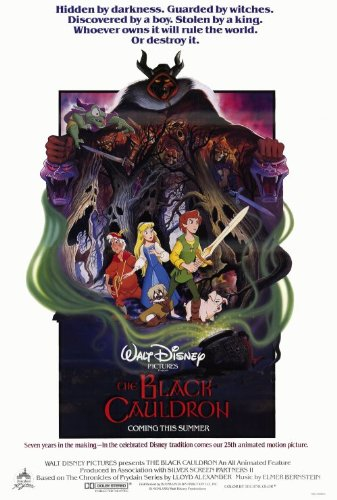

The Walt Disney Animated Film
In the mystical land of Prydain, The Black Cauldron (1985), a Disney animated film, follows Taran, a young pig-keeper with dreams of becoming a great hero. Living a quiet life at Caer Dallben under the care of the elderly enchanter Dallben, Taran tends to Hen Wen, a pig with the magical ability to see the future. When Hen Wen’s visions reveal that the sinister Horned King is searching for the Black Cauldron—a dark artifact capable of raising an unstoppable army of undead warriors known as the Cauldron-Born—Taran is thrust into a dangerous quest to protect the pig and prevent the Horned King from unleashing his evil upon the world. Fleeing with Hen Wen into the wilderness, Taran soon loses her to the Horned King’s minions, setting the stage for a perilous journey to thwart the villain’s plans.
As Taran ventures deeper into Prydain, he encounters a colorful cast of allies who join him in his quest. Princess Eilonwy, a spirited and sharp-witted girl with a magical glowing orb, escapes the Horned King’s dungeons and teams up with Taran, bringing a mix of courage and skepticism to their partnership. They are soon joined by Fflewddur Fflam, a kind-hearted but boastful bard whose enchanted harp snaps strings whenever he stretches the truth, and Gurgi, a timid, furry creature obsessed with “munchings and crunchings” but fiercely loyal once befriended. Together, the unlikely band stumbles into the lair of the Fair Folk, a group of diminutive magical beings hiding Hen Wen, and learns that the Black Cauldron is hidden in the treacherous Morva marshes. Their journey takes them to the eerie domain of three eccentric witches—Orddu, Orwen, and Orgoch—who possess the cauldron and offer it in exchange for a steep price, testing Taran’s resolve and forcing him to confront the consequences of his choices.
The stakes escalate as the Horned King’s forces close in, capturing Taran and his companions and bringing the Black Cauldron into his skeletal grasp. In the shadowy depths of the Horned King’s castle, the villain summons the Cauldron-Born in a chilling display of dark magic, their lifeless forms marching forth to destroy all in their path. Taran, Eilonwy, Fflewddur, and Gurgi must summon their courage and ingenuity to stop the Horned King’s reign of terror before Prydain falls into eternal darkness. Filled with haunting visuals, moments of grim intensity, and flashes of heartfelt camaraderie, The Black Cauldron blends Disney’s animation with a darker, more gothic tone, crafting a tale of bravery, sacrifice, and the struggle between good and evil in a mythic world inspired by Lloyd Alexander’s novels.
Bringing Prydain to the Screen
The development of Disney's The Black Cauldron (1985) is a tale of ambition, turmoil, and transformation within Walt Disney Animation Studios, spanning over a decade and reflecting a pivotal moment in the studio's history. From its inception as a bold fantasy epic to its troubled production and eventual release as a commercial disappointment, the film's journey offers a window into Disney's struggles during the post-Walt era and its search for a new direction. Let’s dive into the detailed history of its development, examining the creative decisions, challenges, and behind-the-scenes dynamics that shaped this often-overlooked chapter of Disney animation.
Early Development and Ambition (1971–1979)
The origins of The Black Cauldron trace back to 1971, when Walt Disney Productions optioned the rights to Lloyd Alexander’s The Chronicles of Prydain. The series, which had garnered critical acclaim — culminating in a Newbery Medal for its final volume, The High King (1968) — caught the attention of Disney animators as a potential source for a sweeping animated epic. The books offered a rich tapestry of characters and themes, blending high fantasy with coming-of-age elements, centered on Taran, an Assistant Pig-Keeper who rises to heroism amidst battles against dark forces like Arawn Death-Lord and the Horned King.
Initially, the project was seen as a chance to create a new cornerstone for Disney animation, akin to Snow White and the Seven Dwarfs (1937). Veteran animators Frank Thomas and Ollie Johnston, two of Walt Disney’s famed Nine Old Men, championed the project, envisioning it as a training ground for a new generation of animators. The studio had recently welcomed young talent from the California Institute of the Arts (CalArts), including future luminaries like John Lasseter and Tim Burton, and The Black Cauldron was positioned as a proving ground for their skills. Early development leaned toward adapting the first two books — The Book of Three (1964) and The Black Cauldron (1965) — into a single film, though there was debate over whether the project might expand into multiple films or remain a standalone feature.
However, the project faced delays almost immediately. Studio chief Ron Miller, Walt Disney’s son-in-law and a key decision-maker at the time, hesitated to greenlight production, reportedly concerned that the young animators lacked the experience to tackle such an ambitious undertaking. Throughout the 1970s, other projects like The Rescuers (1977) and The Fox and the Hound (1981) took precedence, as they were deemed less risky and more aligned with Disney’s family-friendly formula. Meanwhile, The Black Cauldron remained in a state of limbo, with concept art and story ideas slowly taking shape but no firm production schedule in place.
Escalating Challenges and Animator Exodus (1979–1981)
By the late 1970s, The Black Cauldron had gained momentum as a potential “second coming” for Disney animation, with the studio aiming to capitalize on the fantasy wave sparked by films like Star Wars (1977). Development began in earnest in 1979 under the direction of Ted Berman and Richard Rich, who had previously co-directed The Fox and the Hound. The film was envisioned as a darker, more epic departure from Disney’s typical fare, with plans to incorporate groundbreaking techniques like computer-generated imagery (CGI) — a first for the studio—and a more sophisticated visual style inspired by the airbrushed look of earlier classics.
But trouble was brewing within Disney’s animation department. In 1979, star animator Don Bluth, frustrated by the studio’s conservative approach and lack of creative freedom, defected with 13 other animators to form his own company. Bluth cited dissatisfaction with Disney’s handling of projects like The Black Cauldron, where he reportedly sought a larger role in story development but was rebuffed by studio executives. His departure left Disney’s animation team depleted, forcing the studio to rely on a mix of remaining veterans and inexperienced CalArts graduates. The loss was a blow to morale and talent, and it set the stage for a tumultuous production.
Story development for The Black Cauldron also proved challenging. Adapting Alexander’s sprawling narrative into a single feature film required significant streamlining, which led to the decision to focus on elements from the first two books while compressing or omitting much of the series’ depth. The Horned King, a secondary villain in the books, was elevated to the primary antagonist, while Arawn, the overarching evil of the series, was reduced to a spirit trapped within the cauldron — a choice that altered the story’s tone and stakes. Producer Joe Hale, tasked with overseeing the project, aimed for a darker, more mature tone to appeal to a broader audience, including teen boys, but this vision clashed with Disney’s traditional family-friendly ethos.
Production Struggles and Innovations (1981–1984)
Production on The Black Cauldron officially began in the early 1980s, with a budget that eventually ballooned to $44 million — making it the most expensive animated film ever produced at the time. The film was intended to showcase technical innovation, incorporating early CGI for elements like bubbles, a boat, and the cauldron itself, as well as new processes like the APT (Animation Photo Transfer) method for transferring drawings to cels. However, the APT process proved unreliable—it faded over time, forcing the team to revert to the older xerographic process used since the late 1950s. The film was also presented in Super Technirama 70 and Dolby Stereo 70mm six-track surround sound, reflecting the studio’s ambition to deliver a visually and aurally spectacular experience.
The animation team faced immense pressure to deliver on the film’s lofty goals. The production was marked by labor-intensive efforts to create its gothic, atmospheric visuals — backgrounds were meticulously airbrushed, and effects like steam and smoke were crafted using live-action footage of dry ice mists. The climactic “Cauldron-Born” sequence, featuring skeletal warriors rising from the cauldron, was particularly demanding, requiring complex animation and effects to convey its eerie intensity. However, the team struggled with narrative coherence; the script underwent multiple revisions, and the pacing suffered as story elements were cut or rearranged to fit the runtime.
Creative tensions also emerged during production. The film’s darker tone, including gruesome scenes — like a man being mauled by a Cauldron-Born soldier and moments of graphic violence — pushed boundaries Disney had rarely tested. Test screenings revealed that these sequences were too intense for younger audiences, prompting alarm among studio executives. Meanwhile, new characters and subplots, such as the Fair Folk and the three witches of Morva, were added to flesh out the world, but they often felt disconnected from the central narrative, further complicating the story.
Executive Intervention and Last-Minute Changes (1984–1985)
As production neared completion in 1984, Disney underwent a major leadership shakeup. Michael Eisner became CEO, and Jeffrey Katzenberg was appointed chairman of Walt Disney Studios, bringing a new, more hands-on approach to the animation department. Katzenberg, unfamiliar with animation’s unique constraints, viewed The Black Cauldron as a potential liability after early screenings confirmed its unsettling effect on children — some reportedly fled theaters in terror during test showings of the “Cauldron-Born” sequence.
Katzenberg ordered significant cuts, slashing around 10 minutes from the film’s runtime to tone down its graphic content and tighten the pacing. Scenes depicting violence, including shots of Taran fighting his way out of the Horned King’s castle and Eilonwy with ripped garments, were removed or altered. Producer Joe Hale resisted these changes, arguing that animated films were typically edited earlier in the process using storyboards or animatics, not after full animation had been completed. Undeterred, Katzenberg reportedly took the film into an edit bay himself, prompting Eisner to intervene and halt the impromptu edits. However, Katzenberg’s concerns delayed the film’s release from its planned Christmas 1984 slot to July 24, 1985, allowing time for revisions.
These last-minute changes left visible scars on the final product. The editing process introduced continuity issues — such as Eilonwy’s “bauble” (a glowing orb) being emphasized early on but forgotten later — and the narrative felt choppy, with abrupt transitions and underdeveloped character arcs. The score by Elmer Bernstein, while evocative, couldn’t fully compensate for the disjointed storytelling. The film’s final form retained its dark tone but lost some of its coherence, leaving audiences puzzled by its uneven rhythm.
Release and Aftermath (1985 Onward)
The Black Cauldron premiered on July 24, 1985, as Disney’s 25th animated feature and the first to receive a PG rating from the Motion Picture Association of America (MPAA). It was also the first Disney animated film to bear the Walt Disney Pictures logo, signaling a new era for the studio. Despite high hopes, the film was a critical and commercial failure, grossing just $21.3 million domestically against its $44 million budget. It opened fourth at the box office, trailing behind an E.T. re-release, Back to the Future, and National Lampoon’s European Vacation, and was even outgrossed by the lower-budget The Care Bears Movie. Critics panned its lack of charm and narrative depth, often comparing it unfavorably to works like Don Bluth’s The Secret of NIMH (1982).
The fallout was swift and severe. The flop put Disney’s animation department in jeopardy, with Katzenberg and Eisner briefly considering shuttering it altogether. The studio’s animation team was relocated from its historic Burbank lot to a warehouse in Glendale, a symbolic and literal downgrade. Roy E. Disney, Walt’s nephew, intervened to preserve the department, promising a turnaround that eventually led to the Disney Renaissance with films like The Little Mermaid (1989). The Black Cauldron’s failure prompted a shift toward faster, cheaper production methods, influencing the streamlined successes of the late 1980s and 1990s.
Disney distanced itself from the film in the years that followed—it wasn’t released on home video until 1998, a stark contrast to the frequent re-releases of other Disney classics. Over time, however, The Black Cauldron gained a cult following, appreciated for its daring visuals, haunting atmosphere, and willingness to experiment, even if imperfectly. Its troubled development remains a cautionary tale in Disney’s history, reflecting the risks of unchecked ambition and the challenges of balancing innovation with storytelling clarity — a lesson that would shape the studio’s future triumphs.